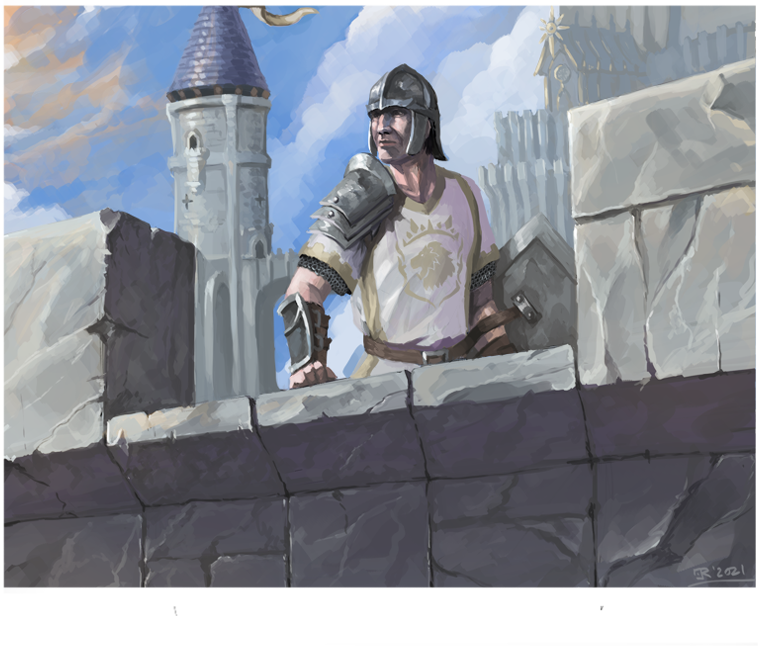

Ability Scores
Ability scores are the core representation of every creature's general aptitudes, each notes by a flat number which in turn denotes a tier. These numbers determine the creature's. statistics for various facets such as their might, swiftness, bravery, balance and so on.
Examples
Human (Male - Karthian) - Medium Humanoid
| Str | Con | Agi | Dex | Ins | Int | Will | Wis | Cha | Bea |
|---|---|---|---|---|---|---|---|---|---|
| 7 | 7 | 6 | 7 | 6 | 7 | 6 | 6 | 7 | 6 |
House Cat (Female- Tabby) - Tiny Beast
| Str | Con | Agi | Dex | Ins | Int | Will | Wis | Cha | Bea |
|---|---|---|---|---|---|---|---|---|---|
| 2 | 2 | 8 | 3 | 9 | 2 | 4 | 4 | 2 | 7 |
Gryphon (Male - Brown) - Large Beast
| Str | Con | Agi | Dex | Ins | Int | Will | Wis | Cha | Bea |
|---|---|---|---|---|---|---|---|---|---|
| 13 | 14 | 12 | 3 | 12 | 2 | 10 | 4 | 2 | 9 |
Ability Score Categories
Abilities are split into distinct categories. These are the Physical, Mind and Social abilities, each governing a part of the character's whole. The details for each is detailed on the further pages.
| Physical | Strenth, Constitution, Agility, Dexterity |
| Mind | Instinct, Intelligence, Willpower |
| Social | Wisdom, Charisma, Beauty |
Ability Score Tiers
Ability score tiers are an approximation of the ablity score's power against the average of the realm's. Each ability tier increase or decrease represents a significant difference in the power of the ability score and grants additional bonuses.
| Tier | Ability Score | Bonus |
|---|---|---|
| Minor | 1-2 | -2 |
| Lessor | 3-5 | -1 |
| Standard | 6-10 | 0 |
| Greater | 11-15 | +1 |
| Superior | 16-20 | +2 |
| Mighty | 21-30 | +3 |
| Legendary | 31-40 | +4 |
| Mythical | 41+ | +5 |
Ability Score Averages
Every species (as shown in the examples) within the beastiary is assinged an ability score in all three categories. The number shown represents the normal, average habitant or travellor of said species. However certain individuals within the masses are gifted, trained, or simply better or worse at parts of their abilities. This is represented by the increase or decrease of ability scores.
| 1 | Pixie | 2 | House Cat |
| 4 | Halfling | 5 | Goblin |
| 7 | Human | 9 | Panther |
| 10 | Grizzly | 12 | Minotaur |
| 14 | Ogre1 | 17 | Roc |
| 18 | Hill Giant | 29 | Treant |
| 25 | Hydra | 32 | Dune Wurm |
| 33 | Xia Serpent | 35 | Pit Fiend |
| 37 | Dragon | 42 | Colossus |
| 46 | Kraken | 50 | Elder Dragon |
Increasing Ability Scores
Ability scores may be increased by players when creating their characters by choosing any number of their species' available classes. The increase is specified on the class itself. If a player chooses multiple classes with the same ablility score increase, they choose the greater one and don't add the benefits together. Keep in mind, each point in an ability score is a significant difference of power!
Should a player wish to gain the benefits of a class, although don't want the ability score increase that comes along with that choice due to their backstory or characters lore, they may ignore the ability score increase.
Decreasing Ability Scores
If a character's backstory should dictate their ability scores be lowered, this is entirely up to the player's choice. While it isn't recommened due to how class feats function, there is nothing stopping the player from creating a weaker variation of thier chosen species.
Player Tip!: Ultimately when choosing the character's ability scores it is best to keep to the rulebook's numbers and to try and match the backstory of the created character. It is even possible to play as a simple villager adventuring for thier first time by not choosing any class and not increasing no decreasing any ability scores. As with all things, keep in mind the other players and their playstyles as well!
Ability Scores
PHYSICAL ABILITY SCORES
STRENGTH (STR)
Strength represents a character's muscle quantity and raw physical power. Characters with high strength can carry more objects as well as strike harder. Strength increases the chance of breaking through armour with physical attacks, increases the character's carrying capacity (although not space) as well as increasing the effectiveness of skills that have to do with muscled exertations such as climbing or swimming.
CONSTITUTION (CON)
Constitution represents a character's vitality and health. Characters with high constitution tend to outlive dangerous situations while also overcoming poisons and diseases more easily. Constitution increases a character's health, their resistance to toxins and poisons as well as certain physical actions such as keeping one's breath.
AGILITY (AGI)
Agility represents a character's nimbleness, speed and grace of movement. Characters with high agility can move faster and with more ease than most while also having an easier time crossing over acrobatic obstacles. Agility increases actions per round, ease of movement, greater striking, turn initiative and skills that have any acrobatic components.
DEXTERITY (DEX)
Dexterity represents a character's attention to small movements and finess. Characters with high dexterity have an easier tim with detailed movements such as picking locks and pockets or crafting a detailed object. Dexterity is used to increase many skill that provide characters alternatives instead of face to face combat, however is also used to calculate the character's aim to strike opponents with ranged weaponry
MIND ABILITY SCORES
INSTINCT (INS)
Instinct represents a character's overall ability to sense dangers and react to them. Characters with high instinct tend to find themselves in fewer dangerous situations than others, reacting to situations almost before they happen. Instinct directly impacts a creature's initiative in combat, their ability to intuitively dodge attacks and increases any skill which requires sensing their opponent.
INTELLIGENCE (INT)
Intelligence represents a character's book knowledge and memory retention. Characters with high intelligence are usually well read and well versed in the mysteries of the world. Intelligence is most notably used for scholar characters as it determines the number of languages known and their well of knowledge upon chosen subjects.
WILLPOWER (WILL)
Willpower represents a character's overall ability to resist outer influencesl Characters with high willpower are not as easily persuaded nor scared and are better able to resist magical domination and illusion effects. Unlike all other ability scores, willpower is never used for rolls and is instead the difficulty check for other skills and effects.
“Our shields are more than wood, metal and cloth, they are the men and women behind it as well.” - Commander Cain
ABILITY SCORES
SOCIAL ABILITY SCORES
WISDOM (WIS)
Wisdom represents a character's action knowledge and ability to read people. Characters with high wisdom will usually know what to do and how to react in most situations. Wisdom therefore increases many skills in which being alert and mindful is the most appropriate action to survive.
CHARISMA (CHA)
Charisma represents a character's overall ability to speak, persuade and influence a target through speech. Characters with high charisma seem to know exactly which words will make things go their way. Charisma is very useful for characters who wish to resolve situations through speech and reasoning
BEAUTY (BEA)
Beauty represents a character's physical attractiveness and elegance. Characters with a high beauty score have an easier time being accepted by most races and will find themselves in less trouble overall. However, beauty without wit or charm only gets a character so far and is the least effective method of influencing a target over time.
"The splendor of my compassion comes from that same strength in which kneels my faith.” - Pendar, Paladin of Areny